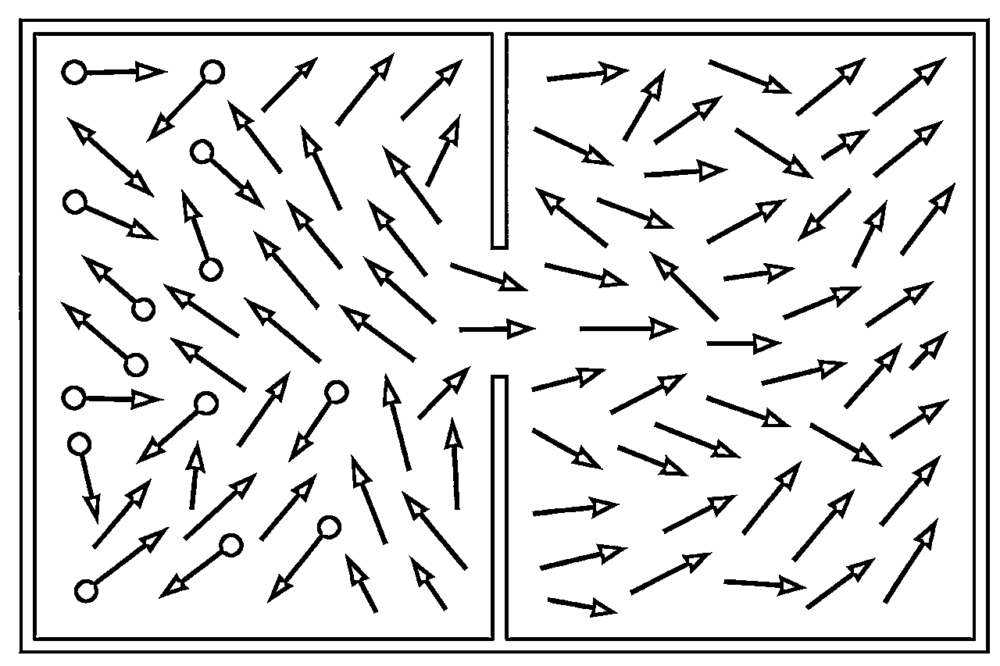

来源：https://ly5achi80l.feishu.cn/docx/SZD6dwWmioltyDxqjG1cuXRynxh
有没有一个公式，可以帮助创业全过程的决策？
大家好，我是包子
在过去的两年，我裸辞转行到了一个完全陌生的领域，一个人在家里做到了赛道头部IP，具体的心路历程可以参考生财的这篇文章
AI+IP，一人公司，如何狂奔到垂类赛道TOP10
https://mp.weixin.qq.com/s/C2DJG9WobnlPwM2eeTsncA
创业中找方向和坚持是最难的，所以大家都强调早点取得正反馈，而在高考志愿这条赛道，高考每年就一次，填志愿也就几天，其他时间别说正反馈了，连反馈都没有。
其他时间，全靠自己不断的调试方向，那么如何持续修正方向？做出合理的决策呢？
作为一个理科生，我希望找到一个公式或者思维框架，能够应对创业中的全部情况。
没想到还真被我找到了！这个公式不仅可以应对创业，我已经把它运用在了生活的方方面面，都取得了很好的效果
那就是【熵增定律】的麦克斯韦版
任何系统，在没有外界干预的情况下，都会走向混乱，混乱导致衰败
这个世界的大大小小，都是系统。“管理一个集团”，“做出一桌好菜”，“养成一个好习惯”，都是系统
放在户外的自行车，过一年车身就会锈迹斑斑，轮胎会漏气干瘪
公司无论大小，只要没人干预，放任自如，就会走向混乱，走向破产
孩子的学习，如果没有自己、老师和父母的刻意干预，就会越来越糟
房间只要没人收拾，就会越来越乱
……
可能很多朋友讲，这就是中学物理，基本常识而已，没什么特别的啊
其实这条定律也可以反过来
任何系统，在合理干预下，都可以走向秩序，秩序通向成功
把自行车放进室内，定期维护，过几年都可以保持很新的状态，甚至会更好骑
公司上下团结一心，目标明确，不断学习，迭代SOP，业绩大概率会变好
孩子和父母沟通顺畅，学习认真，作业工整，成绩大概率会提高
定期打扫整理房间，屋子就会很整洁
……
我用这个视角观察世界已经两年多了，还没有发现任何例外。毕竟是基本物理定律，人类认知世界的巅峰。如果你发现了例外，一定和我说一说。
创业也是一个系统，如果这个系统的秩序程度不断增加，那么成功的概率就会增加
那么问题来了，既然系统会自发的走向混乱，这和我们的预期恰好相反，如何避免混乱，走向秩序呢？
通过阅读科学史，我找到了物理巨佬麦克斯韦的思维实验。这个实验极大的震撼了我，时隔两年都还记得当时内心的澎湃，这就是我一直寻找的“成事心法”。
整个宇宙也是一个系统，根据熵增定律，宇宙的解决就在走向热寂和衰败，这让物理学家无法接受
如何让系统走向秩序呢？麦克斯韦提出了他的想法
（以下叙述经过我的加工，更容易理解，并非麦克斯韦的表达原版）
这是一个混乱的系统，系统中的箭头方向各异，随机移动，毫无秩序
我们在系统中间增加分隔，左侧是外界，右侧是内部系统。虽然增加了分隔，目前左侧的外界系统和右侧的内部系统都是同样混乱的。

如果我们想要在右侧的系统，只保留向右的箭头（秩序），那么可以在隔板开一个小门，并派一个人守在门口。
那么，随着时间的推移，右侧系统的向右箭头会越来越多，也就是说，这个系统走向了秩序。
很显然，核心就是这个守门员，只要守门员保持正确工作，那么右侧系统就会走向秩序
守门员代表了各种身份，创业者是事业的守门员，父母是孩子的守门员，自己是健康的守门员，只要有系统，就有守门员。守门员通常不一定是某个具体的人，当做一个在系统前的“自动门禁系统”更好理解
守门员想要【正确】工作，只需要四个动作：
说起来容易，这其中坑也挺多，正能量让人充满动力，负能量就不想干活了，正信息帮助正确判断，负信息导致错误判断。
讲得太抽象，用案例来解释吧
一个人在家做IP，每天都在做决策，怎么根据这套框架来做决策呢？
自媒体都想做爆款，那么如何做出爆款视频呢？
从麦克斯韦的角度出发，怎样让【做爆款视频】这个系统更加秩序？
在我的直播间起号过程中，有不少机构来招募，甚至开出了百万薪资，当时我的收入是0，那么该怎么做决策呢？
从麦克斯韦的角度出发，如果帮机构带货，会让【直播间做到头部】这个系统，更加秩序，还是更加混乱？
在今年3月30的大会，上午做完分享，下午许老师就找到我，聊了聊能不能开一门线下的AI课程，讲一讲自己是怎么一个人做到这么多事情的。我快速在脑海里过了一遍思维框架，对自己的高报IP主业有什么影响？
从麦克斯韦的角度出发，如果和生财合作AI课程，会让【高报IP】这个系统，更加秩序，还是更加混乱？
既然航海手册都是公开的，为什么要参加航海呢？为什么不自己单干？
从麦克斯韦视角出发：自己单干，还是参加航海，让系统的秩序速度更快？
航海：参加航海有教练带领，有干活氛围，有相互鼓励，即使没有正反馈也更容易坚持
单干：需要持续的给自己鼓劲，需要独自在没有正反馈的情况下坚持
结论：在获取能量方面，参加航海当然比单干更好
航海：在群里的信息更多，有教练、助教帮忙，大家也能相互答疑，信息质量比单看航海手册当然更好
单干：没有答疑，没有群友互助
结论：在获取信息方面，参加航海当然比单干好
在小排老师的《加入生财第一周，做什么最重要？》，提出的「全覆盖级阅读生财有术」，实际上也是获取足够多的信息，只有信息足够多，判断和行动才不会走偏
https://scys.com/articleDetail/xq_topic/8852245214845522
航海：做得好不好，问题出在哪，有教练和助教帮你判断，有同一条船的圈友作为对比
单干：全靠自己判断，如果是行业小白，判断质量不会偏离平均值
结论：参加航海的判断质量远远高于自己单打独斗
航海：需要打卡干活，需要交作业，划水的概率比自己单干要小很多
单干：执行力看自己了，呵呵
结论：参加航海的行动质量一般会高于单干
在《如何提高做产品的成功率？》中，小排已经给出了答案：
https://scys.com/articleDetail/xq_topic/8852488228128112
从麦克斯韦的视角出发，按照哪个势干活，能让你的系统秩序化更高，就按哪个走
什么是优势？就是你在这个系统中，秩序的程度已经很高了，成功概率更高
如果贸然进入一个陌生的行业，那么你的这个系统就是一片混乱，积累秩序的过程很慢的
什么是趋势？就是这个系统，会持续不断地迎来正能量，秩序程度也在不断提高
哪怕躺平也可以跑过行业平均水平，但是同体系中，比不过有优势的系统
所以，在大部分情况下，应该根据优势干活。毕竟已经有一定秩序了。
那么，如果要根据趋势干活，要注意什么呢？
创业这个过程，精力充沛是最基本的要求，通过这套思维框架，可以很好的提升精力状态，也是我自己实践的成果
开启新事业，从零到一是最难的，很多圈友也困在这个环节，要怎么做呢？
线下课舟车劳顿，线上也能找到大部分信息，要不要去线下呢？
在更多的情况下，我们知识系统中的一员，只需要向系统注入正能量和正信息就可以了，简单展开一下
家庭氛围是多人之间的关系组成，自己只是家庭中的一员。如果所有家庭成员，都向系统注入正能量和正信息，家庭氛围自然会更好
公司是更多人和业务的集合，如果希望公司不断成长，需要更多的人注入正能量和正信息
小孩教育主要依靠父母的认知和分工，两者一起注入正能量和正信息
那么，你的目标系统有哪些？
如果这个事情做了，项目上了，对自己的系统注入了正能量和正信息，哪怕没有成果也无所谓，因为各个系统都秩序化了，离成功又近了一步。
最常见的就是表达、写作、沟通、拍摄、剪辑、AI、RPA、运动、情绪、睡眠等等，只要学习了，对自己的系统都是正能量和正信息，怎么都是赚的。
考虑能量和信息的时候，要估摸一下自己的机会成本。

所以，我们的航海手册，会让你的创业系统更加秩序化
这套思维框架，我已经用了两年，定期会记录近期的秩序/混乱变化
不想记录也没事，在生活中的大大小小决策中，哪怕是说一句话，也可以想想，这会为我的系统注入正能量还是负能量，会带来正信息还是负信息？
荣格说，当你的潜意识还没有进入意识，那就是你的命运。
我的理解：生活由无数个下意识的行为组成，这些行为会对各项系统输入能量/信息 ，命运的车轮就此而转动。
感谢阅读，对你有帮助就更好啦😄